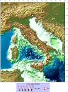
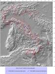

Seismic Zonation ZS9 was designed in the framework of an initiative of the Istituto Nazionale di Geofisica e Vulcanologia (INGV) for the revision of the Italian seismic hazard map (http://zonesismiche.mi.ingv.it/), following the PCM Ordinance 3274 of march 20, 2003. The details can be found (only in Italian) at :http://zonesismiche.mi.ingv.it/documenti/App2.pdf
Maps of cumulative equivalent mechanisms

Maps of horizontal projections of P and T axes

Summary cards